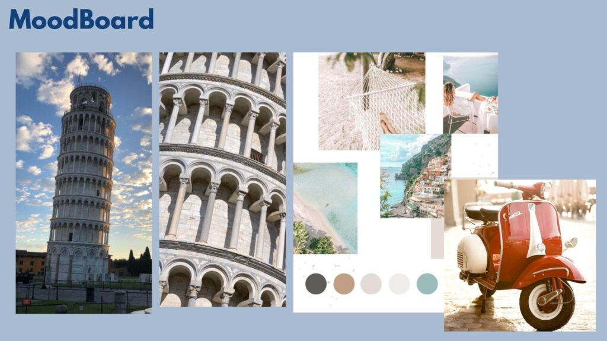
01
Concept
Define how the café should feel and what makes it distinct from the first glance.


A good café has to work at two speeds. At 9:00 AM, it may be handling a queue of takeaway coffees. At 3:00 PM, the same space may be full of laptops, meetings and guests staying for an hour. By evening, lighting and ambience may need to carry a very different mood.
Café design is the balance between those behaviours: fast service and comfortable dwell, product display and operational workflow, brand personality and practical maintenance.
SprintCo designs cafés by connecting concept, brand, customer journey, counter/barista flow, seating, MEP and build planning from the beginning.
Read our step-by-step guide for first-time owners, covering concept, audience, layout, lighting and budget, before you brief a designer.
Before choosing materials or a theme, clarify what the café actually needs to sell and how customers will use the space.
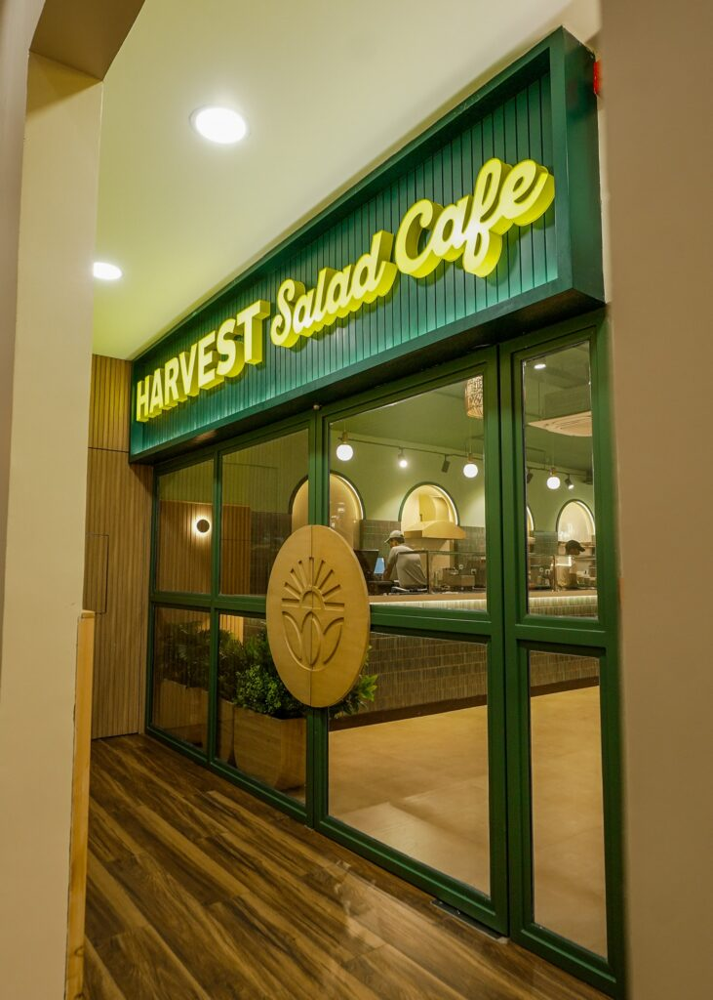

Define how the café should feel and what makes it distinct from the first glance.
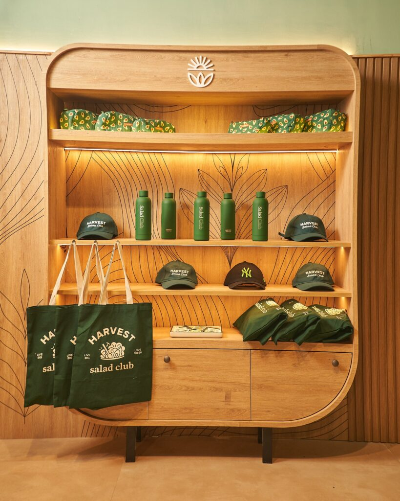
Translate the name, logo, colour, typography and tone into the physical space and customer touchpoints.
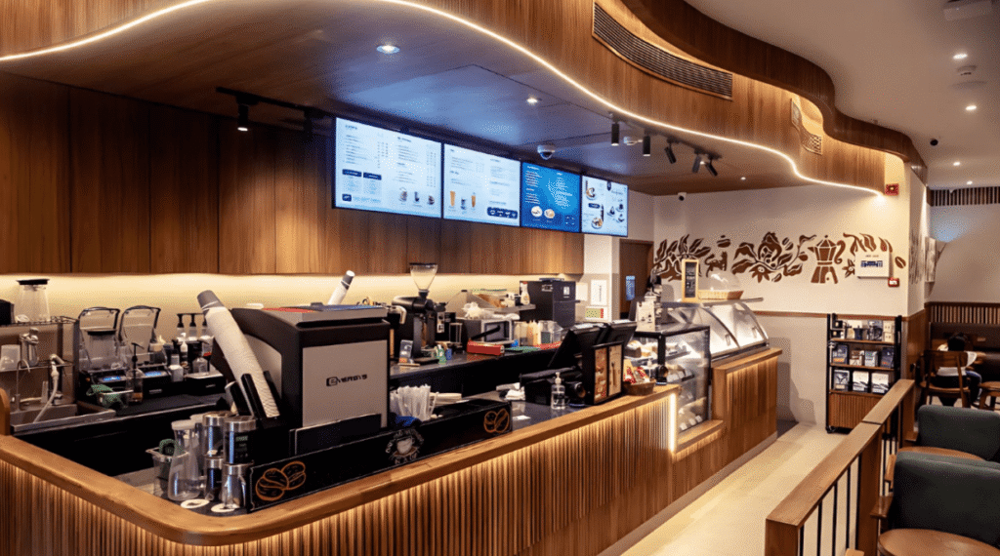
Plan arrival, menu visibility, queue, order, pickup, condiments, seating, washroom and exit.
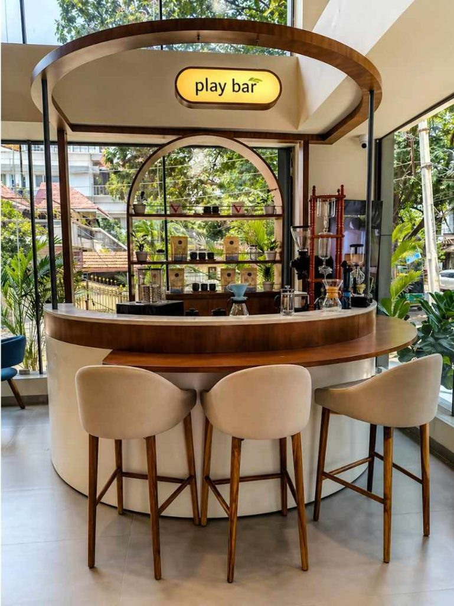
Place espresso machines, grinders, sinks, refrigeration, POS, pastry display and handoff around a logical work sequence.
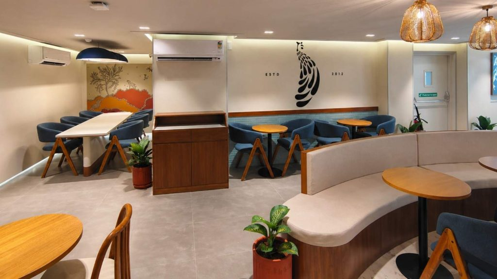
Balance quick seats, comfortable dwell, groups, solos, banquettes, community tables and charging needs.
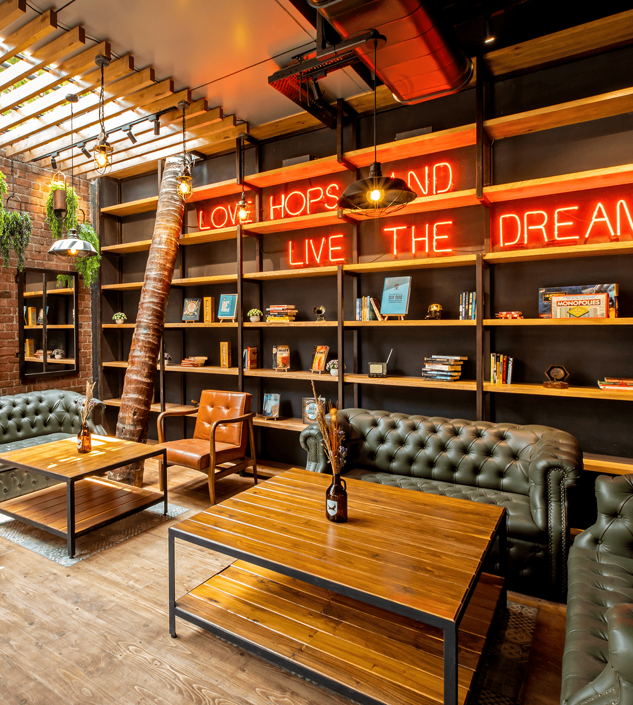
Coordinate power, drainage, hot water, ventilation, lighting and equipment requirements before the counter is built.
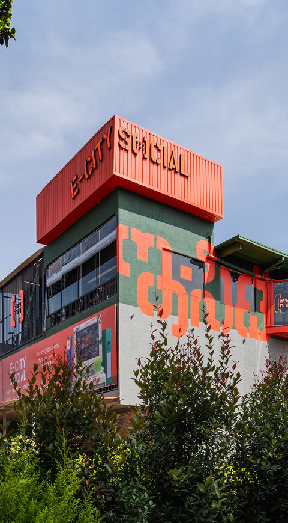
Translate the approved design into fabrication and site execution with fewer late changes.
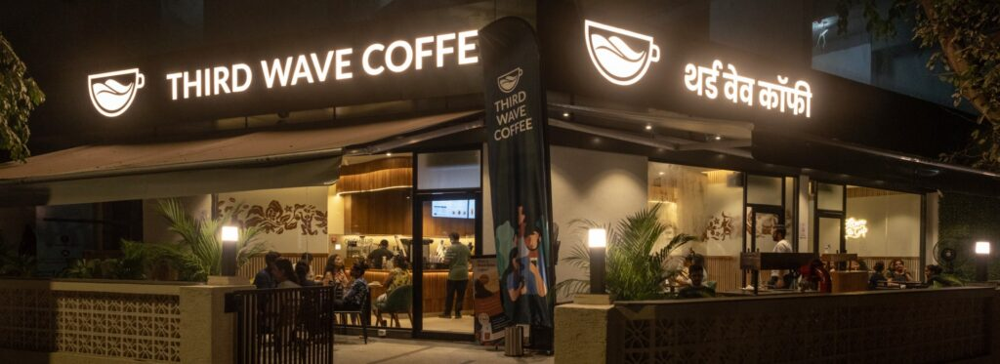
Use the first outlet to refine a repeatable design language if expansion is planned.
A beautiful counter that forces baristas to cross each other all day is an expensive mistake. Equipment selection and menu should be settled early enough to design the workflow around real actions.
Our coffee-shop kitchen guidance stresses the sequence: menu first, equipment second, services third, layout around the workflow – not the other way around.
| Seating type | Best used for |
|---|---|
| Window / counter stools | Solo guests, short stays, compact footprints |
| Two-top tables | Couples, flexibility, easy recombination |
| Banquettes | Efficient perimeter seating and longer dwell |
| Community table | Groups, work sessions, social energy |
| Lounge chairs | Longer stays and premium comfort zones |
| Outdoor seating | Visibility and capacity where climate/site support it |
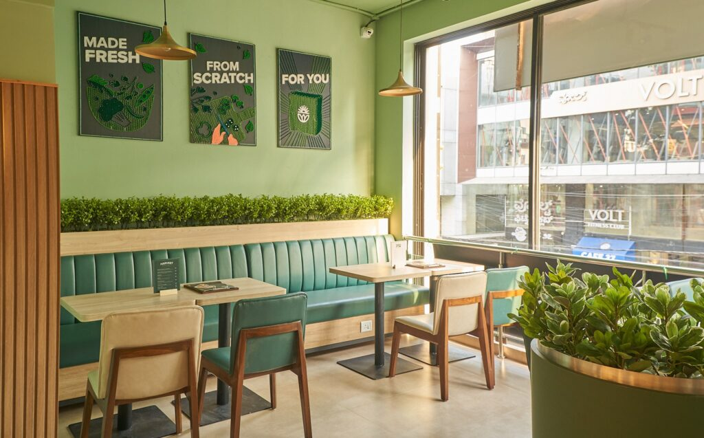
A café should be recognisable without becoming a theme park. The most effective brand moments often come from the counter, material palette, signage, light, packaging and one repeatable signature detail rather than multiple disconnected photo backdrops.
For scalable brands, design the signature so it can survive different sizes and site conditions.
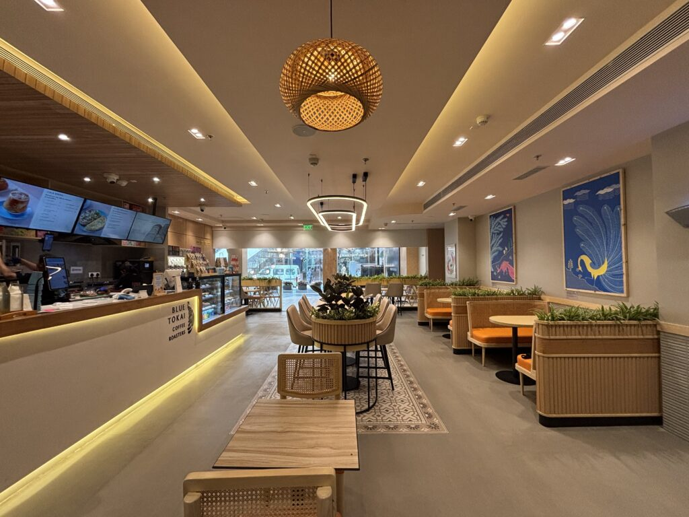
Our Mumbai Blue Tokai project uses quartz counters, timber framing, layered lighting and restrained detailing to support a calm, welcoming brand experience – a proof point for material restraint and café atmosphere.
View Blue Tokai
Our Tuskin Coffee work extended beyond interiors into the name, identity, logo, packaging and modular counter approach – a strong example of brand and space being developed together for a grab-and-go format.
View Tuskin CoffeeIf the goal is multiple outlets, the first site should not be treated as a one-off art project. Capture which materials can repeat, which details should be modular, what changes with site size, how signage works in different façades and which customer-experience moments are non-negotiable.
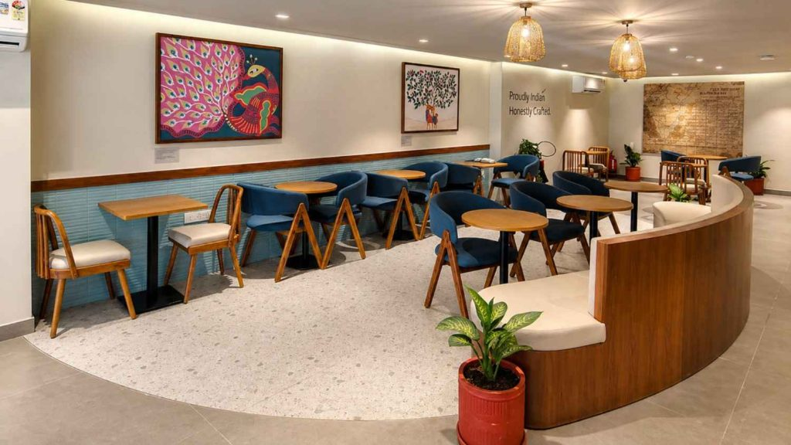
See the full integrated service scope across design, branding, MEP and FlatPack build.
Lock or broadly define the location, menu, service model, target audience, budget range and whether the café will have hot food. These decisions directly affect layout and services.
Cost depends on area, city, site condition, equipment, finish level and scope. Ask whether a quoted rate includes only design, interior works or the complete build stack.
Do not start with a fixed seat count in isolation. Balance capacity with counter flow, circulation, table mix, dwell behaviour and the revenue model.
SprintCo lists brand identity and strategy as a core offering, allowing logos, packaging, signage and environmental design to be coordinated with the physical space.
Yes, many counter and joinery elements can be designed for off-site fabrication or repeatability when the concept and services are developed with modular construction in mind.

Send your city, floor plan, menu direction and café model. SprintCo can help map the counter, seating, brand and services before build begins.
Start Your Café Project.jpg)